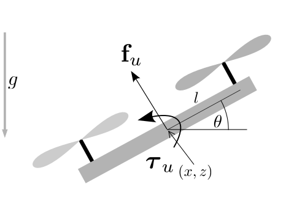
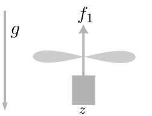
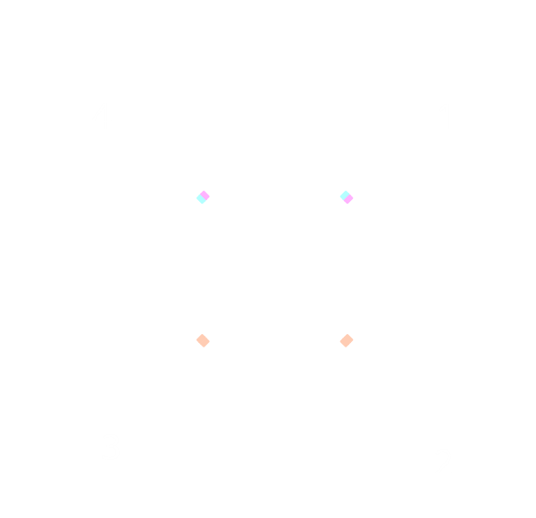
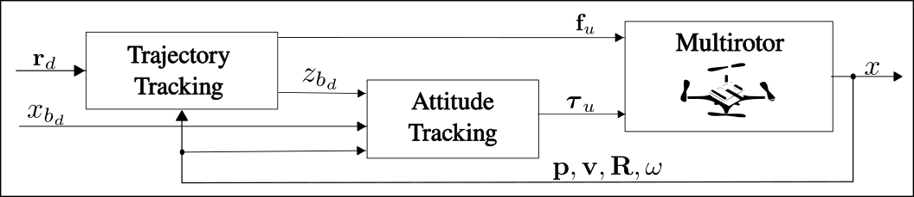
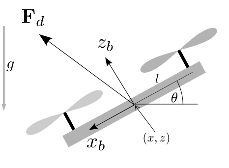
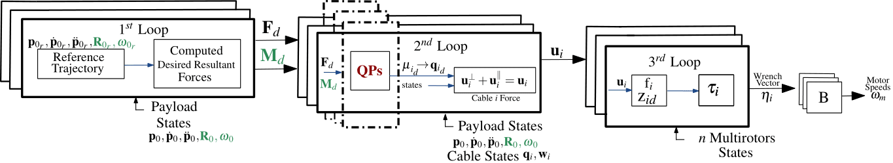

Controllers
Nov 21, 2025
Any progress, questions, or issues?
More in-lab hours next week needed?
Any progress, questions, or issues?
Multirotor Control History
Geometric Control
1D, 2D, 3D Multirotor Control
Controller Stability
\(f = \frac{m}{\cos(\theta)} + \mathbf{g} + k_p e_p + k_d e_d\)
\(\boldsymbol{\tau_z} = k_{\theta}(\theta_d - \theta) + k_{\omega}(\dot{\theta_d} - \dot{\theta})\)

More details in (Mellinger 2012) to see the problems when using
Euler angles representations
Why “Geometric”?
Recall: quadrotors are underactuated systems!

\(e_p = z_d - z\), \(e_d = \dot{z}_d - \dot{z}\)
\(f_1 = m(\ddot{z}_d + k_pe_p + k_de_d + g)\), \(\quad\forall k_p, k_d > 0\)

2D Multirotor
3D Multirotor

Control Structure\(\mathbf{F}_d = m(\ddot{\mathbf{p}}_d + \mathbf{K}_p \mathbf{e}_p + \mathbf{K}_v \mathbf{e}_v + g \mathbf{e}_z)\)
\(f = \mathbf{F}_d \cdot \mathbf{R} \mathbf{e}_z\)
where \(\mathbf{K}_p, \mathbf{K}_v \in \mathbb R^{3\times 3}\) are positive definite diagonal gain matrices
We need to define a desired rotation \(\mathbf{R}_d\) that
can align \(z_b\) with \(\mathbf{F}_d\)
\(\mathbf{R}_d = [x_{b_d}\quad y_{b_d}\quad z_{b_d}]\)

\[ \begin{align} \mathbf{x}_{c_d} &= \begin{bmatrix} \cos(\psi_d) & \sin(\psi_d) & 0\end{bmatrix}^\top\\ \mathbf{y}_{c_d} &= \begin{bmatrix} -\sin(\psi_d) & \cos(\psi_d) & 0\end{bmatrix}^\top\\ \mathbf{x}_{b_d} &= n(\mathbf{y}_{c_d} \times \mathbf{F}_d)\\ \mathbf{y}_{b_d} &= n(\mathbf{F}_d \times \mathbf{x}_{b_d})\\ \mathbf{z}_{b_d} &= \mathbf{x}_{b_d} \times \mathbf{y}_{b_d} \end{align} \]
\(\mathbf{R}_d = \begin{bmatrix} \mathbf{x}_{b_d} & \mathbf{y}_{b_d} & \mathbf{z}_{b_d} \end{bmatrix} \in SO(3)\)
\(\boldsymbol{\tau}_u = -\mathbf{K}_R \mathbf{e}_R - \mathbf{K}_\omega \mathbf{e}_\omega + \boldsymbol{\omega}\times \mathbf{J}\boldsymbol{\omega}- \mathbf{J}(\hat{\boldsymbol{\omega}} \mathbf{R}^T \mathbf{R}_d \boldsymbol{\omega}_d - \mathbf{R}^T \mathbf{R}_d \dot{\boldsymbol{\omega}}_d)\)
\(\Psi(\mathbf{R}, \mathbf{R}_d) = \frac{1}{2} \text{tr}(\mathbf{I} - \mathbf{R}^T \mathbf{R}_d)\)
\(\mathbf{e}_R = \frac{1}{2} \left( \mathbf{R}^T_d \mathbf{R} - \mathbf{R}^T \mathbf{R}_d \right)^\vee\), \((\cdot)^\vee\): \(SO(3) \rightarrow \mathbb R^3\)
\(\mathbf{e}_\omega = \boldsymbol{\omega}- \mathbf{R}^T \mathbf{R}_d \boldsymbol{\omega}_d\)
\(f = m(\ddot{\mathbf{p}}_d + \mathbf{K}_p \mathbf{e}_p + \mathbf{K}_v \mathbf{e}_v + g \mathbf{e}_z) \cdot \mathbf{R}\mathbf{e}_z\)
\(\boldsymbol{\tau}_u = -\mathbf{K}_R \mathbf{e}_R - \mathbf{K}_\omega \mathbf{e}_\omega + \boldsymbol{\omega}\times \mathbf{J}\boldsymbol{\omega}- \mathbf{J}(\hat{\boldsymbol{\omega}} \mathbf{R}^T \mathbf{R}_d \boldsymbol{\omega}_d - \mathbf{R}^T \mathbf{R}_d \dot{\boldsymbol{\omega}}_d)\)
\[ \begin{align} c &= \mathbf{z}_{b_d}^\top (\ddot{\mathbf{p}}_d + g \mathbf{e}_z)\\ \end{align} \]
\[ \begin{align} d_1 &= \mathbf{x}_{b_d}^\top \dddot{\mathbf{p}}_d & d_2 &= -\mathbf{y}_{b_d}^\top \dddot{\mathbf{p}}_d \\ b_3 &= -\mathbf{y}_{c_d}^\top \mathbf{z}_{b_d} & c_3 &= \| \mathbf{y}_{c_d} \times \mathbf{z}_{b_d} \|& d_3 &= \dot \psi_d \mathbf{x}_{c_d}^\top \mathbf{x}_{b_d}\\ \omega_{x_d} &= \frac{d_2}{c} & \omega_{y_d} &= \frac{d_1}{c} & \omega_{z_d} &= \frac{c d_3 - b_3 d_1}{c c_3} \end{align} \]
Note that \(\omega_z\) is wrong in (Mellinger and Kumar 2011). Details are in (Faessler, Franchi, and Scaramuzza 2018) (Appendix A), from which we obtained the results on the slides.
Lyapunov stability analysis
Proof is in the appendix (Lee, Leok, and McClamroch 2010b)
The dynamics are exponentially stable, when the initial conditions satisfy two conditions:
\(\Psi (\mathbf{R}, \mathbf{R}_d) < 2\)
\(\|\mathbf{e}_\omega\|^2 < \frac{2}{\lambda_{\text{max}}(\mathbf J)} k_R (2 - \Psi (\mathbf{R}, \mathbf{R}_d))\),
Key insight: the real dynamics are an inaccurate model
Measure the motor RPM, compute dynamics mismatch online, and compensate for it in the controller \[ \begin{align} &\dot{\mathbf{p}} = \mathbf{v}, && m\dot{\mathbf{v}} = f \mathbf{R} \mathbf{e}_z - m g \mathbf{e}_z + \mathbf{f}_a,\\ &\dot{\mathbf{R}} = \mathbf{R}\hat{\boldsymbol{\omega}}, && \mathbf{J}\dot{\boldsymbol{\omega}} = \mathbf{J}\boldsymbol{\omega}\times \boldsymbol{\omega}+ \boldsymbol{\tau}_u + \boldsymbol{\tau}_a \end{align} \]
When measuring motor rpm, we essentially know \(f, \boldsymbol{\tau}_u\) and can compute \(\mathbf{f}_a\) and \(\boldsymbol{\tau}_a\)
controller can be slightly changed to
\[ f = (-\mathbf{K}_p \mathbf{e}_p - \mathbf{K}_v \mathbf{e}_v + m g \mathbf{e}_z + m \ddot{\mathbf{p}}_d - \mathbf{f}_a) \cdot \mathbf{R}\mathbf{e}_z, \]
\[ \begin{aligned} \arg\min_{\mathbf u} \|\mathbf x_N - \mathbf x_{N_d}\| + \sum_{k=0}^{N-1} \left( \|\mathbf x_k - \mathbf x_{k_d}\| + \|\mathbf u_k - \mathbf u_{k_d}\| \right) s.t.\newline \mathbf x_0 = \text{current state}\\ \mathbf x_{k+1} = \text{step}(\mathbf x_{k}, \mathbf u_{k})\\ \text{actuation and state bounds} \end{aligned} \]
3 Crazyflies transporting a triangular payload with cables

Implement the Lee geometric controller for the Bitcraze Crazyflie 2.1 robot. Test and tune in your simulator (Assignment 1). Execute physical test flights with your controller and report the tracking errors.
Testing steps:
Steps:
f32 and switch from std to coreNext 3.5 Weeks
?